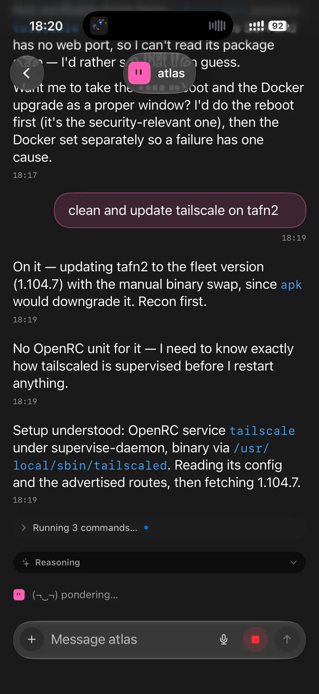
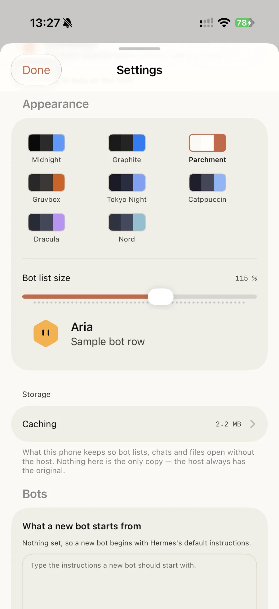
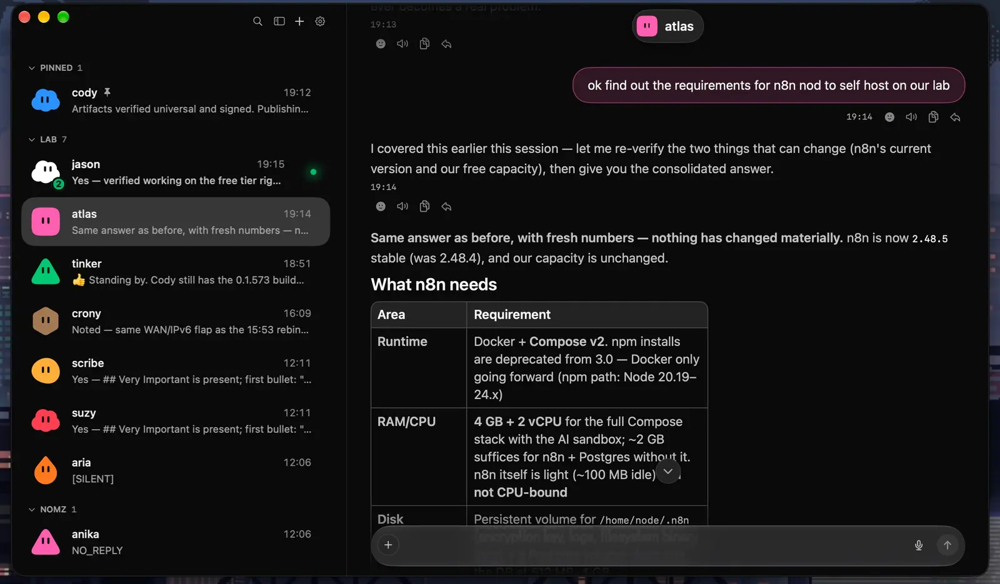
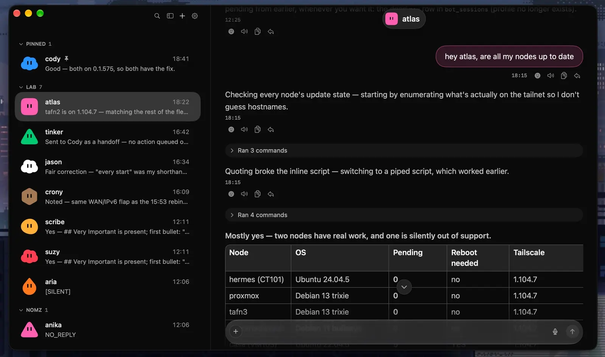
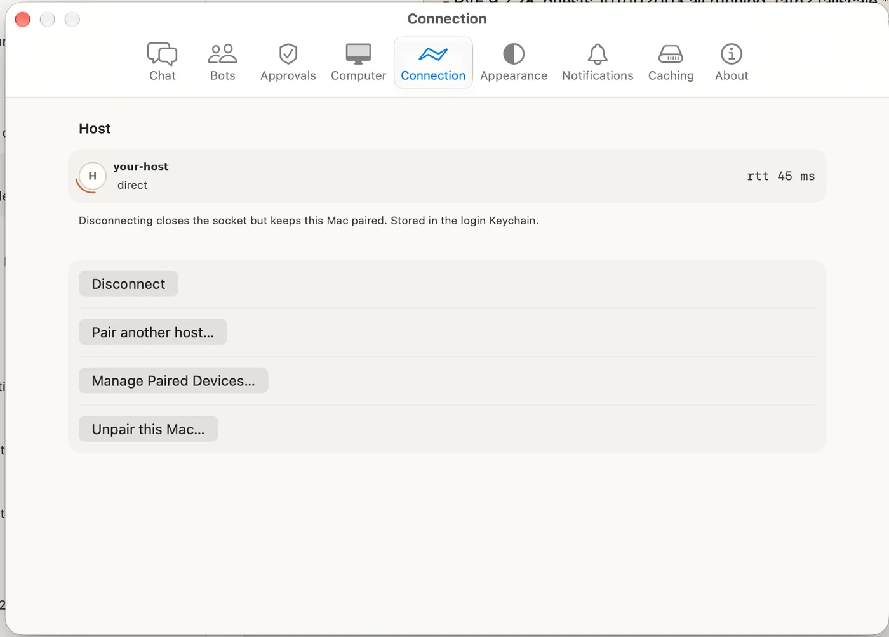

Nothing around it
No frame, no panel, no shaded rectangle. Just the face on your wallpaper, and the space beside it still behaves like your desktop because it is.
iOS · macOS · self-hosted
A native home for the Hermes agents you already run. Bots with faces, a conversation that never resets, and your own Mac doing the work when you ask it to. No account, no cloud, nothing to subscribe to.
Latest release: see the release page
Free and MIT licensed. It needs a Hermes install you already run — the host never leaves your machine.

Desktop pets
Not an icon in a Dock — the bot itself, loose on your wallpaper, doing its small business while you work. Click it and it answers without a window getting in the way.
No frame, no panel, no shaded rectangle. Just the face on your wallpaper, and the space beside it still behaves like your desktop because it is.
It bobs, tilts, hops and wanders, blinks on its own clock and glances around the room. Ask for less motion and it calms down instead of freezing.
Click, type, Return. The answer opens beside it, says what the bot is doing in one word, and hops with a badge when something lands while you were away.
A bot's own face
Six shapes to start from, then move the eyes, pick a colour and watch it change as you do. The face you make shows up in the list, in the chat, and on your desktop.
A blob, a box, a mug, a sprout, a cat, an egg — or paste a definition from the open-bot-avatar community and make it yours.
Colour, where the eyes sit, how far apart, how big — with the preview in front of you the whole time. What you see is what gets saved.
Idle, Thinking, Reading, Working, Using the computer, Waiting for you, Blocked, Done — one word, in the list, under the pet and on the lock screen.
Files, both ways
Send a workbook, a document or a PDF and the bot reads what is actually inside it. Ask for a file and it arrives in the reply, one press from open.
Sheets by name, tables row by row, PDF pages in order. Your phone, your Mac and every bot work from the same text, so answers don't depend on where you asked.
When a bot writes a report, a sheet or a PDF, the reply carries it. Press once: Quick Look on the Mac, the share sheet on the phone.
On the phone
Open a bot and you are exactly where you left off. No session list, no titles to keep, nothing to tidy up later.




Secure sign-in
Tell a bot to book the table. When it hits a login, it asks you in the app — on a card that names the site, so you always know what you are approving.
Fill the card on your phone or your Mac and the bot is in. It is told one thing — whether it worked.
The value lives in memory, goes straight into the page and is swept. Not in the transcript, not in a log, not in the model's context.
Email on one screen, password on the next, a six-box code after that — in order, submitted with the site's own button.
Integrations
Mail, calendar, drive, docs, sheets and maps, plus Cloudflare and Vercel — connected once, through your own key, with as many accounts as you really have.
Name each account the way you say it out loud, so "send it from the work one" means the work one.
With mail connected, a bot can read the one-time code a site just sent you and finish the sign-in itself — so you are asked for your password and nothing else.
Connections sit under your key, on your host. Your mail and calendars are never copied into Hermey.
Local computer use
Switch it on and your bots can build, click, type and drive the machine under your desk — while you watch, take over, or switch it off again. No SSH, no port opened, nothing listening.



Everything else
Because they work: streaming answers, search across every conversation, a lock-screen card that tells you when it's done.
Install
One command on the machine that already runs Hermes, then pair the app. It is unsigned — that is how it stays free and account-free.
On the machine that already runs Hermes. The script downloads the published build and checks it before it installs anything.
curl -fsSL https://github.com/macblizzard/hermey/releases/latest/download/install.sh | sudo sh
The host prints a code and a QR. Type the code, or scan it — the token stays in the Keychain.
sudo hermeyd pair
Every profile on your host turns up as a bot. Pick one and its conversation resumes where it stopped.
cody · atlas · crony · sage — whatever your host runs.
One switch in Settings → Computer, then grant only the macOS permissions you want to grant. Keep Remote Login off — the app does the work.
Platforms
The phone is for away from the desk; the Mac is for when you are not. Both talk to the same host and each keeps its own place in the same thread.
iOS 17 or later · AltStore or SideStore
macOS 14 or later · disk image, unsigned
Unsigned, so macOS quarantines the first launch. Authorise it once:
xattr -dr com.apple.quarantine /Applications/Hermey.app
Documentation
Every flag, every permission and every failure we know about, on its own site with a search box.
Questions
If something here is wrong or missing, the repo takes issues — and the whole client is small enough to read.